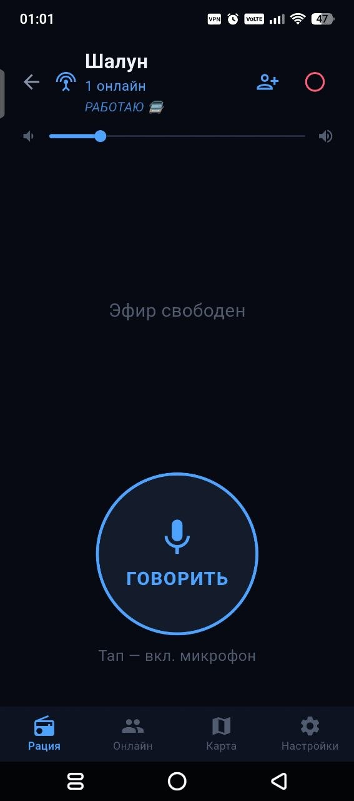

Живой голос
Передача кнопкой на телефоне. Звук можно слушать через подключённую Bluetooth-гарнитуру.
Интернет-рация для своей команды
Когда проще сказать, чем написать.
В дороге, на работе и между друзьями.
APK · Версия 1.9.0 · Нужен интернет
Попробуй волну. Это анимация,
микрофон не включается.
Суть простая
Открой свой канал, нажми кнопку передачи и говори. Голос помогает объяснить то, для чего в переписке понадобилось бы десять сообщений.
Внутри Шалуна

Передача кнопкой на телефоне. Звук можно слушать через подключённую Bluetooth-гарнитуру.
Участники канала, приглашения и заявки. Администратор управляет доступом и микрофонами.
Показывать свою геопозицию или нет, каждый решает сам в настройках.
Отправляется из настроек администраторам канала. Не заменяет звонок в экстренные службы.
Первый выход на связь
Скачай APKУстанови приложение на Android. При обновлении не удаляй предыдущую версию.
Выбери позывнойРазреши доступ к микрофону. Геолокацию включай только если хочешь показываться на карте.
Вступи в каналПопроси приглашение у коллеги. Если вход по заявке, дождись решения администратора.